I design & deploy entire systems in my sleep
and while awake, I dream.
FuzzboxAI.
Intention:
Platform available for acquisition or acquihire. See more.
Projects:
normql: a functional TS "ORM" for rapid developmentP2PMachine: TS toolkit for multi-protocol p2p stacksEdgeMachine: blockchain = {P2PMachine, IPFS, Cloudflare Workers}Projects Sample:
Commonwealth (2023/24): a democratized fiat monetary base, powered by a W3C DID rooted DAO-of-DAOs
Gno.land Hacking (2023) — Includes DAO-of-DAOs prototype with self-executing Proposals. Linked from awesome-gno repo.
Shinyblocks (2023) — Typescript lib emulating ERC2535 internally. Made for Diamond contract development, but simplifies smart contract interactions in general.
Diamond Hardhat Starter Repo (2022) — Starter ERC2535 repo with tasks and tests defined. Linked from awesome-diamonds repo.
EVM Secrets (2022) — Secrets sharing both with and without replay protection. Inspired by ERC712. Made with ERC2535.
SlimeBrawlyBrawl (2022) — Unity game inspired by Super Smash Bros made as a single player endless runner. Early build on Steam.
DFM/dfm-min (2022) — Think NPM for ERC2535. dfm-min is a minimized downloadable that provisions a diamond dev environment from a diamond.json config.
Updraft (Astro/Tailwind) (2022) — Simple/reusable components made with AstroJS. Leverages TailwindCSS.
Social Insurance 2.0 (2022) — Insurance as a unifying means to underwrite and secure social mobility, and redefine a sustainable social contract for the 21st Century. Became a structural foundation for Commonwealth.
CMesh (2022) — Inspired by NATS.io, CMesh was largely an excuse to use Go for a non-trivial project. The result: a nascent new DID-rooted intranet concept? Will return to.
OneBook (2022) — Terraform monorepo codebook facilitating rapid deployment of greenfield side projects.
DEIT Accounts/Contacts (2022) — A full small business productivity suite made originally for crypto funds.
Bottlecap/Deluge (2021) — Bittorrent Peerwire Protocol inspired p2p capital flow framework called Deluge. Current form (Bottlecap) is a DEX crammed inside an ERC20 token resulting from a ~2 day hackathon. Bad code, potentially neat idea.
Fractional Foundation (2021) — The project that would become the "capital model" of Commonwealth. A thought experiment/prototype for a new means to underwrite money.
Op144 (2021) — Unity action RPG game inspired by Valheim built on a hexgrid and with APM synced to the music's BPM (144).
CloutLegend (2021) — ERC721 contract that uses a random user API and mints NFT "business cards" with “clout” and “legendary” status. Included an NFT-to-NFT "social network" and ability to gamble clout for "legendary".
Chainlink Hardhat Hackathon (2021) — Chainlink VRF, Price Aggregator and API integration contracts & Hardhat tasks/tests.
RoomSim (2018/19) — Unity project aiming to create a simple p2p virtual shared space, including p2p voice chat. Ie: the "Metaverse" before the Metaverse, but more useful.
Morpheus (2018) — Crypto price scraper & signals generator. Python ingests candle data and generates timeseries for every ta-lib indicator for every interval.
CosmoBots (2017) — A resource gathering, crafting and trading oriented RPG built as NodeJS Slackbots. Included a "contract" construct and mechanisms for p2p debt obligations.
Random Hacking + Music (~2015-17) — Was working while playing with tooling/ideas, often enabled by AWS/Unity. Creatively spent more time with music as an outlet. See Artistic Creations.
Yahoo! Pipes enabled social ETL pipelines (~2014) — Applied layers of logic and regex to sanitize regionalized feeds. Reduced process of curation/publishing for 8 accounts to a few button clicks.
Githubberment (2013) — A proposed Github rooted means to achieve version controlled legislative consensus development and tag-based civic engagement feedback loops. A decade later, the ideas live on in Commonwealth.
Newsasaur (~2011/12) — A tag oriented blog engine directly connected to a discussion forum, like HackerNews or Reddit paired with Blogger. Similar to Hashnode.
Intention:
Goings On:

: blockchain/distributed systems research & developmentvia Exclaim! I:
Founded sourced.fm. Like Twitter + Reddit + Kickstarter for local music, inspired by an old music forum called Stillepost. Built a small team around the project and was included in a MaRS report on Canadian media (2014).
Examples:
sourced.fm is an abstract model of bottom-up socialcapitalismGithubberment captures a process of consensus developmentSocial Insurance 2.0 captures an ontology for bottom-up societyFractional proposes a more tunable model for a fiat currencyCommonwealth combines them, democratizing money via distributed identities, meritocratic processes and priority of the commons.